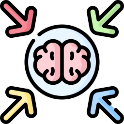
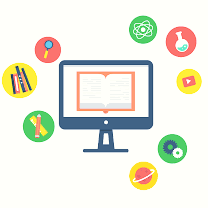
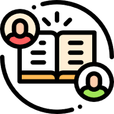
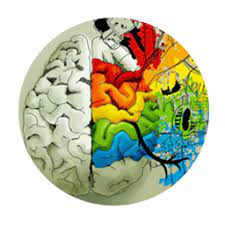
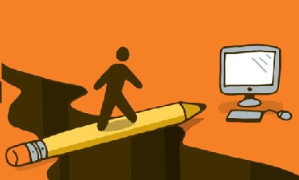
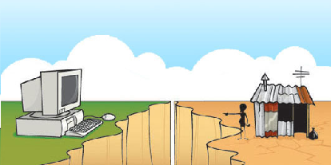

Ventajas de las TIC para los estudiantes
Los estudiantes pueden acceder a una amplia variedad de recursos educativos en línea, incluyendo libros electrónicos, artículos, videos y simulaciones interactivas.
Figura 25. Recursos educativos
Las TIC permiten la adaptación de contenidos y métodos de enseñanza según el ritmo y estilo de aprendizaje de cada estudiante, facilitando un aprendizaje más personalizado.
Figura 11. Aprendizaje personalizado
Plataformas en línea, foros y herramientas de colaboración facilitan la interacción y el trabajo en equipo, incluso a distancia.
Figura 12. Colaboración en línea
Los estudiantes adquieren habilidades digitales esenciales que son relevantes tanto en la educación como en el futuro mercado laboral.

Figura 14. Habilidades digitales
La educación en línea proporciona flexibilidad para aprender en cualquier momento y desde cualquier lugar, lo que beneficia a estudiantes con horarios ocupados.

Figura 15. Flexibilidad en aprendizaje
Plataformas educativas en línea ofrecen una amplia gama de cursos y materiales de aprendizaje, permitiendo a los estudiantes explorar temas específicos de su interés.

Figura 26. Plataformas digitales
Las evaluaciones en línea y las herramientas educativas proporcionan retroalimentación instantánea, permitiendo a los estudiantes comprender y corregir errores de manera rápida.

Figura 16. Retroalimentación rápida
Las TIC ofrecen herramientas que fomentan la creatividad, como software de diseño, herramientas de edición multimedia y entornos de programación.

Figura 17. Creatividad
Desventajas de las TIC para los estudiantes
No todos los estudiantes tienen acceso equitativo a dispositivos electrónicos y conexiones a internet, creando una brecha digital entre aquellos que tienen y los que no.

Figura 18. Brecha digital
La presencia de dispositivos electrónicos durante el aprendizaje puede llevar a distracciones, como redes sociales, juegos o entretenimiento en línea, afectando la concentración.

Figura 19. Distracciones
La educación en línea puede carecer de la interacción cara a cara y del ambiente social que se experimenta en un entorno presencial.
Figura 20. Falta de interacción personal
La dependencia excesiva de la tecnología puede afectar negativamente la capacidad de los estudiantes para realizar tareas sin asistencia tecnológica.
Figura 21. Dependencia tecnológica
El uso prolongado de dispositivos electrónicos puede estar asociado con problemas de salud, como fatiga visual, sedentarismo y estrés.

Figura 27. Salud
Existen preocupaciones sobre la seguridad de los datos y la privacidad de los estudiantes en entornos en línea.

Figura 22. Seguridad y privacidad
La evaluación de habilidades y conocimientos puede ser más compleja en un entorno digital, y la posibilidad de trampas o plagio puede aumentar.
Figura 23. Desafíos de evaluación
Los estudiantes de áreas con recursos limitados pueden enfrentar desafíos en el acceso a tecnologías avanzadas.

Figura 24. Desigualdad de acceso